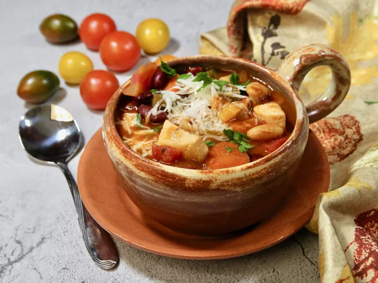

Korean BBQ Galbi

Ingredients
- 4 tablespoons olive oil, divided
- ½ pound skinless, boneless chicken breast, cut into bite-sized pieces
- 1 cup chopped onion
- 2 cloves garlic, minced
- ½ cup sliced carrot
- ½ cup chopped celery
- 5 cups chicken stock
- 1 (14.5 ounce) can diced tomatoes with basil, garlic, and oregano
- 1 (15.5 ounce) can cannellini beans, drained and rinsed
- 1 (15.5 ounce) can kidney beans, drained and rinsed
- 1 (6 ounce) can tomato paste
- 1 small zucchini, quartered lengthwise and cut into 1/2 inch slices
- ½ cup frozen cut green beans
- 1 teaspoon Italian seasoning
- ½ cup ditalini pasta
- salt and freshly ground black pepper to taste
- ⅓ cup grated Parmesan cheese, or more to taste (Optional)
- 2 teaspoons chopped fresh parsley
Directions
- Heat 2 tablespoons olive oil in a large pot over medium heat. Add
chicken to pot, and sauté just until lightly browned, about 3 minutes.
Remove chicken from pot; set aside.
- Heat remaining 2 tablespoons olive oil in the pot; add onions and cook
until translucent, about 3 minutes. Stir in garlic; cook until fragrant,
about 30 seconds. Add carrots and celery; cook for 5 minutes, stirring.
occasionally
- Reduce heat to medium-low; stir in chicken stock, diced tomatoes,
cannellini beans, kidney beans, tomato paste, zucchini, green beans,
Italian seasoning. Simmer, covered, for 15 minutes.
- Stir in chicken and ditalini pasta, and cook until pasta is tender yet firm
to the bite, about 8 minutes. Season to taste with salt and black
pepper. If soup is too thick, add a little water or stock. Garnish each
bowl with Parmesan and parsley.
Return to main page